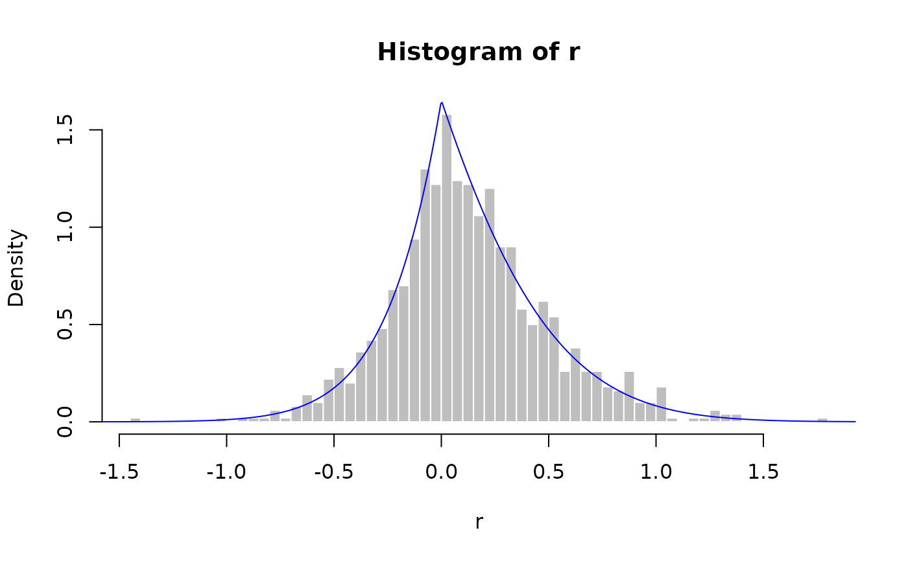

The Lasso Distribution
LassoDistribution.RdNormalizing constant Z, probability density function, cumulative distribution function,
quantile function, and random generation for the Lasso distribution with parameters a, b, and c.
In addition, Mills ratio, mean, and variance of the Lasso distribution are provided.
Usage
zlasso(a, b, c, logarithm)
dlasso(x, a, b, c, logarithm)
plasso(q, a, b, c)
qlasso(p, a, b, c)
rlasso(n, a, b, c)
elasso(a, b, c)
vlasso(a, b, c)
mlasso(a, b, c)Arguments
- x, q
Vector of quantiles (vectorized).
- p
Vector of probabilities.
- a
Vector of precision parameter which must be non-negative.
- b
Vector of off set parameter.
- c
Vector of tuning parameter which must be non-negative values.
- n
Number of observations.
- logarithm
Logical. If
TRUE, probabilities are returned on the log scale.
Value
zlasso: the normalizing constant Z.dlasso: density function.plasso: cumulative distribution function.qlasso: quantile function.rlasso: random generation.elasso: expected value.vlasso: variance.mlasso: mode.
Details
If \(X \sim \text{Lasso}(a, b, c)\) then its density function is: $$ p(x;a,b,c) = Z^{-1} \exp\left(-\frac{1}{2} a x^2 + bx - c|x| \right) $$ where \(x \in \mathbb{R}\), \(a > 0\), \(b \in \mathbb{R}\), \(c > 0\), and \(Z\) is the normalizing constant.
More details are included for the CDF, quantile function, and normalizing constant in the original documentation.
Examples
a <- 2; b <- 1; c <- 3
x <- seq(-3, 3, length.out = 1000)
plot(x, dlasso(x, a, b, c, logarithm = FALSE), type = 'l')
r <- rlasso(1000, a, b, c)
hist(r, breaks = 50, probability = TRUE, col = "grey", border = "white")
lines(x, dlasso(x, a, b, c, logarithm = FALSE), col = "blue")

plasso(0, a, b, c)
#> [,1]
#> [1,] 0.3739435
qlasso(0.25, a, b, c)
#> [,1]
#> [1,] -0.08945799
elasso(a, b, c)
#> [1] 0.1218306
vlasso(a, b, c)
#> [1] 0.1287739
mlasso(a, b, c)
#> [,1]
#> [1,] 0
# The Modified_Hans_Gibbs() function uses the Lasso distribution to draw
# samples from the full conditional distribution of the regression coefficients.
y <- 1:20
X <- matrix(c(1:20,12:31,7:26),20,3,byrow = T)
a1 <- b1 <- u1 <- v1 <- 0.01
sigma2_init <- 1
lambda_init <- 0.1
beta_init <- rep(1, ncol(X))
nsamples <- 1000
verbose <- 100
Output <- Modified_Hans_Gibbs(
X, y, a1, b1, u1, v1,
nsamples, beta_init, lambda_init, sigma2_init, verbose
)
#> iter: 0 lambda2: 111.787 sigma2: 135.243
#> iter: 100 lambda2: 10.8956 sigma2: 25.884
#> iter: 200 lambda2: 61.9234 sigma2: 20.4167
#> iter: 300 lambda2: 94.7265 sigma2: 39.2217
#> iter: 400 lambda2: 72.3648 sigma2: 15.074
#> iter: 500 lambda2: 50.5227 sigma2: 15.9175
#> iter: 600 lambda2: 135.66 sigma2: 20.0574
#> iter: 700 lambda2: 38.0999 sigma2: 30.6545
#> iter: 800 lambda2: 2.58036 sigma2: 22.0707
#> iter: 900 lambda2: 25.2982 sigma2: 45.5914
colMeans(Output$mBeta)
#> [1] 0.3472431 -0.2546945 0.5260358
mean(Output$vlambda2)
#> [1] 70.99966